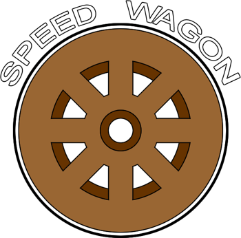

Bem-vindo à Fundação Speedwagon
Seja bem-vindo à rede interna da Fundação Speedwagon. Nossa instituição dedica-se ao avanço científico, à pesquisa médica e à investigação de fenômenos que desafiam o conhecimento convencional. Este portal foi desenvolvido para facilitar o acesso dos funcionários às informações institucionais, aos departamentos e aos registros de pesquisa. Acesso autorizado. Bem-vindo à equipe.
Sobre a Fundação
A Fundação Speedwagon atua em diversas áreas de pesquisa e desenvolvimento, contando com instalações e equipes especializadas distribuídas em diferentes regiões. Suas atividades incluem pesquisas científicas, assistência médica, estudos arqueológicos e investigação de fenômenos incomuns.
Durante seu trabalho na instituição, você poderá entrar em contato com diferentes departamentos, documentos e projetos de pesquisa. Cada setor possui atribuições específicas e segue protocolos próprios, sendo importante conhecer suas responsabilidades e respeitar as normas de acesso às instalações e aos arquivos.
Robert E. O. Speedwagon
Robert E. O. Speedwagon (1863–1952) foi o fundador da instituição e uma figura fundamental para sua história. Empresário britânico, construiu sua fortuna na indústria petrolífera e decidiu utilizar seus recursos para financiar pesquisas e iniciativas voltadas ao progresso da humanidade.
Em 1910, fundou a organização que recebeu seu nome, estabelecendo os princípios que orientam suas atividades até hoje. Como funcionário, é importante conhecer sua trajetória e compreender os ideais que deram origem à instituição da qual você agora faz parte.
Conheça nossos departamentos
A Fundação Speedwagon organiza suas atividades em diferentes áreas de atuação, cada uma responsável por contribuir para nossos objetivos científicos, médicos e operacionais.